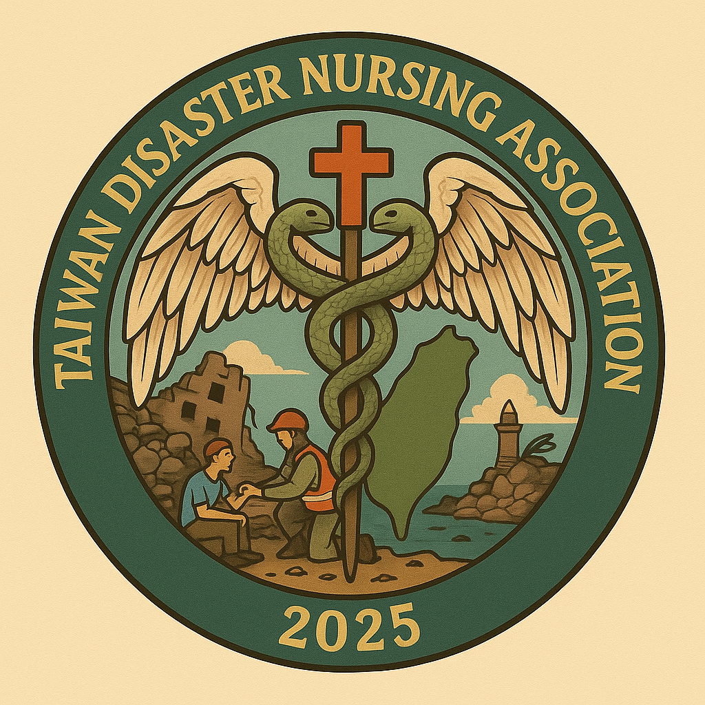

跨領域師資團隊
語言治療與聽力學系
長期照護系

院系跨域協作，串聯產官學研韌性力量
計畫主持人
國立臺北護理健康大學 健康科技學院院長
負責計畫跨系所資源整合與行政支持
計畫協同主持人
負責計畫架構設計、專業課程導入
及校園與社區韌性實作之推動

社區緊急應變推動經驗與社會對話，協助建構社區韌性網絡。
提供止血（STB）、CPR/AED 專業講師資源與國際認證支持。

支援大型災難模擬演練、醫療動員規劃與平災轉換實務指導。
提供創新的急救教育教材與情境模擬設備，優化全民推廣體驗。

深化護理專業在災害應變中的角色，協助收容與避難所護理規劃。

作為在地社區實踐場域，協助整合長照據點與高齡弱勢族群的防災宣導。